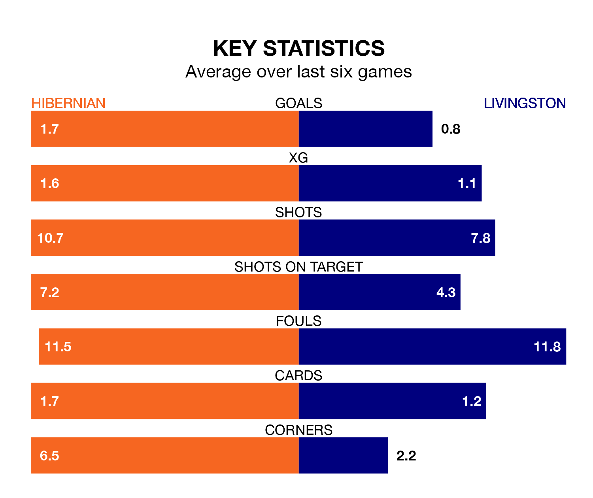

Hibernian are heavy favourites to keep all three points at home in Saturday's kick-off against Livingston.
Hibs, who sit seventh in the Premiership with 29 games played, are priced at 1.5 to seal victory at the Easter Road Stadium.
Sitting five places and 18 points behind them in the table, Livingston are 5.5 to win with *Betting Company*, while the draw is at 4.0.
In the last 10 years, Hibernian and Livingston have played each other on 28 occasions. Hibernian won 15 of them, Livingston eight, and they drew five times.
On average, Hibs scored 1.8 goals and Livingston 1.2 in those matches.
Their last meeting was on December 9, when Hibernian won 1-0 away.
With 20 goals in 29 games so far this season, Livingston are the league's joint-second-lowest scorers with 0.7 goals per game. And they are conceding more than average, letting in 49 goals at a rate of 1.7 per game.
Hibernian, meanwhile, are average scorers, with 1.3 goals per game. They have conceded 1.6 goals per game.
Hibs are in mixed form in the Premiership, with two wins and three draws from their last six games.
With a win and a draw over that period, the visitors' form is worse – they have taken four points from 18, compared to the home team's nine.
Hibernian's last match was on Wednesday, a 2-2 draw against Ross County, with Adam Le Fondre and Myziane Maolida getting the goals for Hibs.
Livingston drew 1-1 with St. Johnstone last time out, on March 2, with Andrew Shinnie on the scoresheet.
Saturday's match will be refereed by Nick Walsh, who has taken charge of 15 Premiership games so far this season, issuing two red cards and booking 74 players. He has awarded eight penalties.
The last Hibernian game Walsh refereed was a 2-1 home loss to Celtic on February 7. His last Livingston match was their 2-1 loss away at Aberdeen on December 20.
Updated: 15:10 (UTC), 15/03/24